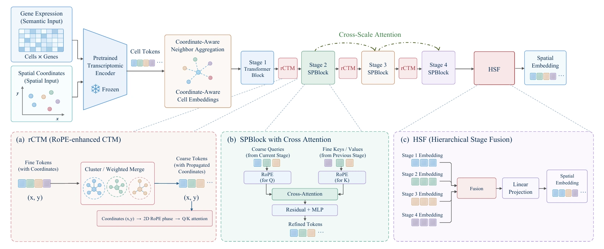
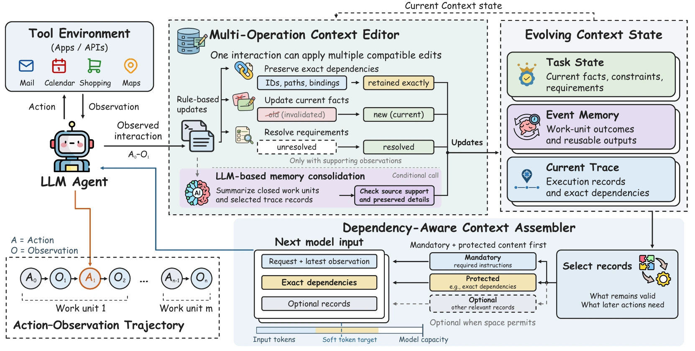

研究生
中国科学院大学 · 人工智能学院
研究生阶段系统学习人工智能方法，并在单细胞与多组学建模、机制推理和长程智能体研究中深化表征学习、知识利用与决策问题。围绕具体课题，持续训练从研究问题定义、方法设计到实验验证和论文写作的完整研究过程。
研究生阶段系统学习人工智能方法，并在单细胞与多组学建模、机制推理和长程智能体研究中深化表征学习、知识利用与决策问题。围绕具体课题，持续训练从研究问题定义、方法设计到实验验证和论文写作的完整研究过程。
本科阶段主要建立数理、编程与系统建模基础，学习从数据中刻画系统状态，并逐步接触控制、优化和反馈决策的方法。工程训练形成了将复杂问题拆解为模型、约束与可检验方案的习惯，也为后续跨领域研究打下基础。
研究聚焦动态复杂系统中的可信决策：从多源数据中识别当前状态，推演干预的可能后果，核查机制与证据，并在持续变化的任务中形成可由人审查、修正的行动建议。
可靠的态势判断始于表征。OmniCell 将单细胞表达和组织空间邻域纳入统一建模，尝试在基因、细胞与组织层面建立可比较的表示；GOformer 进一步区分细胞、基因与 GO 功能表示的读出，考察不同层次的信息如何服务下游任务。SPARSE 则从冻结的转录组表征出发，用坐标感知的多尺度空间适配和表达重建约束，让模型同时保留细胞分子身份与组织环境。相关工作分别涉及 OmniCell 的基线构建和评估、GOformer 的读出与比较方案设计，以及 SPARSE 从问题提出到论文写作的几乎全程主导。
状态表征回答“系统现在如何”，行动决策还需考虑“改变之后会怎样”。DynPerturb 在动态细胞与空间系统中共同刻画干预时间、强度和位置，通过时序图、空间邻接与记忆模块追踪调控重连及反馈。参与其中的数据分析、模型评估和消融研究，也促使这条路线从静态观察延伸到候选干预窗口的推演。但预测本身仍需解释：BiOmics 以显式知识关系、潜在表示和专业工具组织“检索—推理—预测”的机制链；BiOmics Discovery 将候选发现与独立核验分开，明确支持证据、反向证据与尚待验证的缺口。这两项工作主要围绕研究框架、证据组织和验证路径设计展开。
当决策进入长程任务，证据还必须随新观察持续更新。EvoState 把执行轨迹、历史事件和当前任务状态分开维护，使关键引用与未完成要求能进入下一步判断；在法律 Agent 工作中，自然语言里的主体、条件、义务与例外被整理为可计算、可追溯的约束。AEP-ECRG 则把问题推进到证据不足时的主动取证：比较继续调查与立即行动的成本和风险，并用证据前提约束高影响行动。这些研究主要围绕状态更新、规则表达、主动取证与治理框架的构想和设计。
这条路线最终指向人机协同指挥：机器整合态势、预测后果、标明证据来源和不确定性，并提出可比较的调查或行动选项；人设定目标、权限和风险边界，审查依据并决定关键行动。下一阶段的核心是把表征、推演、机制核验、任务记忆和主动取证放入同一任务闭环，检验建议能否被追问、纠错和持续更新。
在跨学科场景中，把研究问题转化为可执行的模型和智能体方案。
华大北京创新中心 · AI 算法研发
统一单细胞与空间转录组的基础模型
OmniCell 面向单细胞转录组缺少空间信息、空间转录组又常受分辨率限制的问题，在同一预训练框架中学习细胞内基因表达关系与细胞间空间依赖。模型通过输入序列显式组织相邻细胞，形成基因、细胞及组织拓扑的统一表示；论文在细胞类型结构、基因共表达、细胞类型解卷积与空间区域识别等任务上检验这些表示。
参与统一建模思路的讨论，负责基线模型构建、数据分析和模型评估，梳理不同数据与任务的比较口径。研究重点是确认空间信息的引入是否增强组织层面的解释，同时保留可辨认的细胞与分子特征。查看预印本 ↗
华大北京创新中心 · AI 算法研发
细胞、基因与 GO 功能表示的读出研究
GOformer 围绕预训练主干输出的细胞、基因与 GO 功能表示，研究不同层次的信息应如何用于细胞注释和迁移任务。评估区分两类问题：各模型冻结细胞表示的质量由统一线性探针比较；GOformer 自身的任务性能则另行考察基因与 GO 表示经注意力汇总、融合后的优化读出，避免把不同训练配置合成一个排名。
主要参与读出方案和评价框架设计，梳理细胞向量、基因汇总、GO 汇总及多路融合的对照关系，并组织任务、训练协议与结果解释。项目仍在探索，网页不将某一读出方案写成适用于所有任务的最终模型。
北京大学法学院
法律任务要求智能体处理规范文本中的主体、适用条件、义务、例外及依据，并在事实变化时判断规则是否仍然适用。实习工作围绕法律语言到计算机语言的转换，探索把自然语言规定拆解为可检索、可计算的约束，再组织成有来源和条件的推理流程。
重点参与问题抽象与研究框架设计，关注法律规则、案件事实和智能体行动之间的对应关系。其方法价值在于让智能体的判断能够指出依据、适用范围与未满足条件，便于人工核查。
按研究主线展开具体工作。投稿与探索状态依据 2026 年 10 月提供的信息；论文主图仅展示获准公开的两篇 ICLR 工作。
状态表征 · 独立第一作者
Semantic-Preserving Adapter for Robust Spatial Embeddings
SPARSE 研究如何在不重训大型转录组主干的条件下，让已有细胞表示识别组织中的空间结构。方法在每个中心细胞周围建立多尺度邻域，通过特征引导的 token 合并、坐标传播、空间旋转位置编码、跨尺度注意力及自顶向下融合提取局部到区域的信息；掩码表达重建则约束空间适配过程，减少原有分子语义的流失。
论文在留出的脑区、胚胎阶段、心脏切片和全脑切片上考察空间区域识别、细胞类型区分、标签迁移与邻域组成预测，并与参数规模相近的适配方法比较。几乎全程主导研究：提出问题与方法结构，推进实现、实验和消融，组织论文写作及修改。

动态推演 · 共同作者
Dynamic Perturbation Modeling for Spatiotemporal Single-Cell Systems
DynPerturb 把干预的“何时、强度多大、作用于何处”放进统一的动态建模框架。模型以不同时点的细胞或基因为节点构建动态图，结合时间编码、空间邻接与带时间戳的记忆，跟踪扰动传播、调控边重连和细胞状态变化；连边预测与节点分类提供互补的分析视角。
论文利用肾脏疾病、造血分化和小鼠心脏发育等系统，分析候选敏感窗口、谱系转换与区域间反馈。按照稿件中的既定分工，参与数据分析、模型评估、消融实验、结果组织和稿件准备及修订；研究结论作为模型支持的生物学假设呈现。
机制解释 · 共同第一作者
A Foundational Bio-Reasoning Agent for Traceable and Mechanistic Multi-omics Discovery
BiOmics 试图弥合多组学分析结果与生物学机制解释之间的距离。框架将显式知识推理空间与潜在表示空间结合，由知识图谱提供实体与关系依据、模块化分析工具处理数据和候选、智能体规划检索及推理步骤，形成“检索—推理—预测”的研究流程。稿件涉及间接致病变异、细胞注释与药物重定位等任务，以检验跨尺度的机制解释能力。
主要承担研究构想和整体框架设计，明确知识、工具与智能体的协作关系，以及如何保留推理路径、证据来源和待核查假设。稿件仍在共同修改，项目状态和共同第一作者身份按本人提供的信息展示。
机制验证 · 在研
BiOmics Discovery 将机制发现组织为可复查的研究流程：从生物学问题出发，查找适配的数据、产生候选机制或靶点，再在候选名单固定之后寻找独立数据、功能证据及文献线索。针对药物耐受与肿瘤研究，流程特别区分原始发现、外部复现、补充支持和反向证据，避免把同一数据的重复分析误认为独立验证。
主导研究问题拆解、候选固定规则、证据分级与验证路径设计，并推动数据与分析能力接入。项目仍处探索和方法整合阶段；网页只描述框架与当前工作，不把候选信号写成已确认的机制或临床结论。
持续决策 · 共同第一作者
Multi-Operation Context-State Transitions for Long-Horizon LLM Agents
EvoState 研究长程智能体如何在压缩上下文时仍保留下一步行动必需的信息。框架把当前执行证据、历史事件结果和现行事实与要求分成 Current Trace、Event Memory、Task State；多操作编辑器依据新观察更新这些记录，依赖感知组装器则优先纳入精确编号、路径、未解决要求与行动依赖，即使它们超过柔性的 token 预算。
论文在 AppWorld、BFCL 长上下文任务和交互式 CRMArena-Pro 子集上比较任务成功与 token 开销，并分析关键引用的保留和下一步行动进展。重点参与研究构想、三类状态划分、更新机制、评价框架及论文论证，使问题从“如何压缩历史”转向“如何维护可行动的状态”。

主动取证 · 在研
面对证据稀缺、信息源可信度变化以及行动代价不对称的环境，AEP-ECRG 探索智能体应何时继续调查、优先获取什么证据、何时才进入处置。研究框架以公开观测、当前证据、信任状态和预算为输入，比较候选调查的价值与成本；高影响行动需要满足可追溯的证据前提和风险边界。
主要提出研究问题与整体框架，设计从信念更新、主动取证到运行时证据治理的闭环，以及收益、成本和风险的比较方式。正式训练及治理效果仍在验证，因此这里只介绍研究设计，不展示未经确认的性能结论。